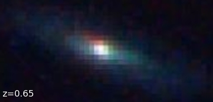

|

This is a disk-shaped galaxy much like our own. Interestingly, the light we see left this galaxy about the same time our Earth was forming, around 5 billion years ago. We know this from measuring the shift in wavelength of its spectrum (expressed as the parameter 'z') towards redder colours. This is caused by the light having to travel to us at a constant rate across our ever-expanding universe.
|